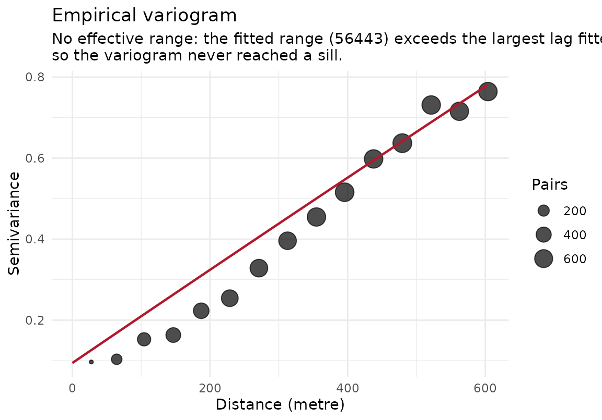

Draws the empirical variogram that estimate_sac_range()
attaches to its result, with the fitted model and the effective range
overlaid where a range was identified, and a subtitle saying why not where
it was not. A variogram that never reaches a sill, or that has no spatial
structure at the lags resolved, is the single most useful thing to
see when a range comes back NA, so those cases are drawn
rather than refused.
Usage
# S3 method for class 'sac_range'
plot(x, ...)Arguments
- x
An object of class
sac_range, as returned byestimate_sac_range().- ...
Ignored.
Details
Nothing is recomputed: the plot reads the variogram,
variogram_model, crs, directional and
anisotropy_used attributes the estimate already carries. The
distance axis is in the units of the CRS the variogram was actually fitted
in, which estimate_sac_range() may have chosen itself for lon/lat
input.
See also
plot.spatial_fit(type = "variogram"), which draws
the same picture for a fitted model's residuals.
Other plotting:
plot.aoa(),
plot.block_size_sweep(),
plot.feature_selection(),
plot.gwr_model_selection(),
plot.resolution_profile(),
plot.spatial_fit(),
plot_calibration(),
plot_cv_metrics(),
plot_folds()
Examples
if (requireNamespace("gstat", quietly = TRUE) &&
requireNamespace("ggplot2", quietly = TRUE)) {
library(sf)
set.seed(3)
n <- 150
xy <- data.frame(x = runif(n, 0, 1000), y = runif(n, 0, 1000))
xy$z <- sin(xy$x / 150) + rnorm(n, sd = 0.3)
pts <- st_as_sf(xy, coords = c("x", "y"), crs = 32632)
r <- estimate_sac_range(pts, response_var = "z")
plot(r)
}
